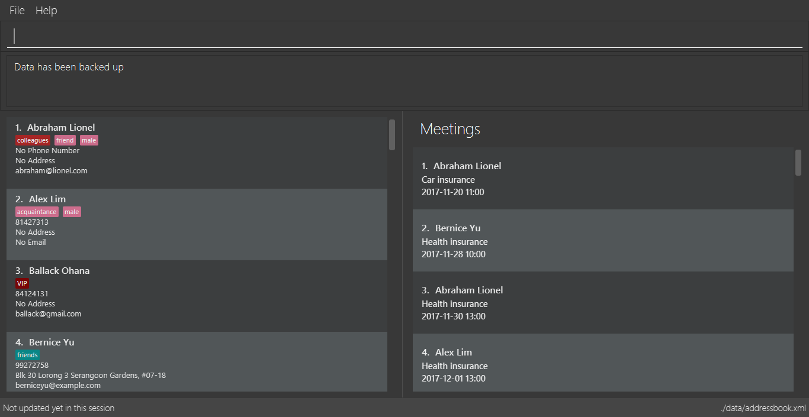

Project: ABC Business Contacts
ABC Business Contacts (ABC) is a desktop Business Contact Management application. The user interacts with it using a CLI, and it has a GUI created with JavaFX. It is written in Java.
Code contributed: [Functional code] [Test code]
Creating a backup : backup
Command Name: backup
Shorthand Alias: b
Function: Creates a backup file to store the data in address book.
Format: backup
You may want to be safe and backup often when using ABC:
-
Type in
backup. (Figure 4.13.1)
>> backup

Figure 4.13.1 -
Press Enter and you should see a message indicating the successful backup of your data. (Figure 4.13.2)

Figure 4.13.2
| Your data is automatically backed up every time you close the app. |
Restoring a backup : restore
Command Name: restore
Shorthand Alias: rb
Function: Retrieves data from a backup file and store it in ABC.
Format: restore
You encounter an unforeseen circumstance and want to revert to a backup file:
-
Execute the
backupcommand to save the current data. (Figure 4.14.1)
>> backup

Figure 4.14.1 -
Enter the
clearcommand to simulate a lost of data. (Figure 4.14.2)
>> clear

Figure 4.14.2 -
Type in
restorecommand. (Figure 4.14.3)
>> restore

Figure 4.14.3 -
Press Enter and you should see that the backup data is restored. (Figure 4.14.4)

Figure 4.14.4
| An error message will be shown if you do not already have a backup file in the default file path. (Figure 4.13.5) |

Figure 4.13.5
End of Extract
Justification
Users may lose their original copy of saved data for many reasons. The file may be corrupted or it may have been edited accidentally. As such, the backup and restore backup command will allow users to retrieve back their loss data.
Backup / Restoring Backup
Mechanism
The backing up of ABC is done by BackupCommand and the restoring of data from a backup file is done by RestoreBackupCommand.
BackupCommand inherits from Command as it does not support the undoing and redoing of user actions, whereas RestoreBackupCommand inherits from UndoableCommand.
These commands require access to Storage from Logic and the way to accomplish this is to post an event to EventsCenter. Subscribers in StorageManager will handle these events and respond correspondingly.
The following shows a sequence diagram of how the BackupCommand is carried out.

RestoreBackupCommand shares a similar sequence diagram in terms of logic.
|
The BackupCommand is executed when the commands backup or b is entered. The data that is in model or the active address book is first passed as a parameter to BackupDataEvent. The event will be handled by StorageManager and is saved into the default file path "data/addressbook-backup.xml".
The following is the implementation of BackupCommand:
public class BackupCommand extends Command {
//... variables, constructor, other methods...
@Override
public CommandResult execute() throws CommandException {
// reading data from model
ReadOnlyAddressBook backupAddressBookData = model.getAddressBook();
// posting event to backup data
EventsCenter.getInstance().post(new BackupDataEvent(backupAddressBookData));
return new CommandResult(String.format(MESSAGE_SUCCESS));
}
}The RestoreBackupCommand is executed when the commands restore or rb is entered. RestoreBackupDataEvent is posted and StorageManager handles it.
The data from default file path "data/addressbook-backup.xml" will be retrieved and it will replace the active address book.
The following is the implementation of RestoreBackupCommand:
public class RestoreBackupCommand extends Command {
//... variables, constructor, other methods...
@Override
public CommandResult execute() throws CommandException {
//... other codes and checks...
RestoreBackupDataEvent event = new RestoreBackupDataEvent();
// posting event to help with restoring backup data
EventsCenter.getInstance().post(event);
// overwriting the data in active address book
ReadOnlyAddressBook backupAddressBookData = event.getAddressBookData();
model.resetData(backupAddressBookData);
return new CommandResult(String.format(MESSAGE_SUCCESS));
//... other codes and checks...
}
}If the backup file does not exist in the default file path, an error message will be shown to the user.
This check is done before RestoreBackupEvent is posted. Once again, this requires Logic to access Storage.
Therefore, a BackupFilePresentEvent will be posted and the Subscriber in StorageManager would handle this event to check if the backup file exist.
| A backup of the data is automatically created when ABC is closed. |
Design Considerations
Aspect: Accessing Storage from Logic
Alternative 1 (current choice): Make use of EventBus to post events and have StorageManager handle the backing up or retrieval of data
Pros: Follows the architecture closely without introducing dependencies between components.
Cons: New Event classes have to be created every time a command requires access to data in the storage.
Alternative 2: Allow Logic to access Storage and its functions
Pros: Easier implementation for current and future functions or commands related to Storage.
Cons: Increases coupling between the components.
End of Extract
Enhancement Proposed: Person and Meeting hashmap data structure
Every time a person object is updated, the corresponding meeting object has to be updated as well. This is because the meeting object contains a person object. With a hashmap data structure, updating a person will be much faster as compared to looping through a list.